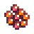
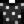

Roe
| Roe | |||||
 |
|||||
| Fresh fish eggs. These can be aged in a preserves jar to bring out more flavor. | |||||
| Information | |||||
| Source | Fish Pond • Fishing Treasure Chests | ||||
| Season | |||||
| Energy / Health |
|
||||
| Sell Price | 30 + (Base Fish Price / 2) | ||||
Roe are fish eggs that are produced by fish in a Fish Pond. They can also be found in Fishing Treasure Chests after obtaining the power from the Jewels Of The Sea book (25% chance).[1]
The selling price of Roe depends on the fish's base sell price. The equation is 30 + (base fish sell price / 2), rounded down to the next nearest integer. The health and energy gained from eating roe are the same for all types of roe.
All types of roe can be placed in a Preserves Jar to create a higher-value Artisan Good: Sturgeon Roe creates Caviar; other roe create fish-specific varieties of Aged Roe.
Roe does not belong to any category and therefore it does not benefit from any Profession. It also cannot be sold to Pierre's General Store, but it can be sold to the Fish Shop or placed in the Shipping Bin. At the Stardew Valley Fair, Roe is considered uncategorised (trash), and gives 2-3 points for judging.
Roe Types
All fish in Fish Ponds produce roe except for the two varieties of Squid (which produce Squid Ink instead). Of the two non-fish that can be put in Fish Ponds, Sea Urchins produce roe, but Coral doesn't.
However, after obtaining the power from the Jewels Of The Sea book, all fish roes, including Squid and Midnight Squid roes, may be found in Fishing Treasure Chests. Note that Sea Urchin Roe is not included.
The price and color of each roe is dependent upon the fish. In general, the color matches the dye color of the fish;[2] Sturgeon are an exception and have black-colored roe, which is used as a blue dye in Dye Pots. Orange is used for any fish that does not have a dye color, although this is not the same color as the generic Roe image, which is a mix of orange and pink eggs. Despite the variety of displayed colors, all types of roe create orange dye.
Gifting
| Villager Reactions
| |
|---|---|
| Neutral | |
Artisan Goods
- See also: Preserves Jar Productivity
Note that processing times are approximate. One hour = 60 minutes from 6am to 2am, but 1 hour = 100 minutes from 2am to 6am.
| Image | Name | Description | Ingredient | Equipment | Processing Time | Sell Price |
|---|---|---|---|---|---|---|
| Aged Roe | Fish eggs aged in salt to bring out the flavor. | 2 × Roe price | ||||
| Caviar | The cured roe of a sturgeon fish. Considered to be a luxurious delicacy! |
Tailoring
Roe can be used in the spool of the Sewing Machine to create the dyeable Polka Dot Shirt. 
Bundles
15 Roe are one of the options for the  Fish Farmer's Bundle in the Pantry (Remixed).
Fish Farmer's Bundle in the Pantry (Remixed).
References
History
- 1.4: Introduced.
- 1.5: Is now used in a remixed bundle.
- 1.6: Can now be found in Fishing Treasure Chests after obtaining the power from the Jewels Of The Sea book, including Squid, Midnight Squid, Legendary Fish, and Legendary Fish II roe, making them now obtainable. Fixed Roe changing to the default pink color just before being eaten by the Player.
| Animals and Produce | |
|---|---|
| Coop | Chicken (Egg • Large Egg • Brown Egg • Large Brown Egg) • Dinosaur (Dinosaur Egg) • Duck (Duck Egg • Duck Feather) • Golden Chicken (Golden Egg) • Rabbit (Wool • Rabbit's Foot) • Void Chicken (Void Egg) |
| Barn | Cow (Milk • Large Milk) • Goat (Goat Milk • Large Goat Milk) • Sheep (Wool) • Ostrich (Ostrich Egg) • Pig (Truffle) |
| Fish Pond | Fish (Roe) |
| Slime Hutch | Slimes (Slime • Slime Ball • Slime Egg) |
| Other | Cat • Dog • Horse • Turtle |